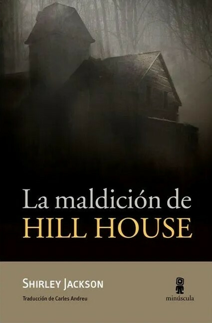

IT - STEPHEN KING
SINOPSIS: Tras veintisiete años de tranquilidad y lejanía, una antigua promesa infantil les hace volver al lugar en el que vivieron su infancia y juventud como una terrible pesadilla. Regresan a Derry para enfrentarse con su pasado y enterrar definitivamente la amenaza que los amargó durante su niñez.Saben que pueden morir, pero son conscientes de que no conocerán la paz hasta que aquella cosa sea destruida para siempre.
EL PACTO - LAURA ALVEA Y JOSÉ ORTUÑO
SINOPSIS: David es un periodista que está trabajando en un reportaje sobre enfermedades raras. Encuentra a Clara, una mujer con una terrible y extraña enfermedad que la está transformando en una criatura monstruosa. Descubre que el origen de la enfermedad es tan terrible como sus efectos, y que su curación puede ser aún más aterradora.
LA CABAÑA - NATASHA PRESTON
SINOPSIS: Un fin de semana de juerga en una cabaña remota es justamente lo que Mackenzie necesita. Quiere divertirse a tope con sus amigos, lejos de los padres y las obligaciones. Pero tras una noche loca dos de ellos mueren asesinados.Sin signos de que la puerta haya sido forzada y ningún rastro de forcejeo, las sospechas recaen sobre el grupo de amigos. Entre ellos solo hay un asesino. Pero ninguno es inocente.
LOS DEL OTRO LADO - CHRISTOPHER BUEHLMAN
SINOPSIS: Cuando Frank Nichols se traslada al pequeño pueblo donde vivió un antepasado suyo de infausta memoria, su presencia despierta a un espíritu oscuro y antiguo, con sed de venganza.
LA CASA DE LAS SOMBRAS - ADAM NEVILL
SINOPSIS: El último trabajo de Catherine terminó mal. El acoso corporativo en una de las principales cadenas de televisión hizo que la despidieran y la obligaran a abandonar Londres, pero estaba decidida a recuperar su vida. Un nuevo trabajo y algunos terapeutas más tarde, las cosas pintan mejor. Especialmente cuando se le presenta un proyecto desafiante: catalogar el alijo salvajemente excéntrico de muñecas y títeres antiguos del difunto M. H. Mason.
LA MALDICIÓN DE HILL HAUSE - SHIRLEY JACKSON
SINOPSIS: Cuatro personajes llegan a un viejo y laberíntico caserón conocido como Hill House. Son el doctor Montague, un estudioso de lo oculto que busca pruebas de fenómenos psíquicos en casas encantadas, y tres personas a quienes el doctor ha reclutado para llevar a cabo un experimento. A pesar de las reticencias de su familia, Eleanor, una joven algo atormentada y de pasado infeliz, acabará formando parte de la singular comitiva. Los otros son Theodora, con quien Eleanor establece un fuerte vínculo inicial, y Luke, el heredero de la casa. Pronto todos deberán enfrentarse a situaciones que están más allá de su comprensión. Hill House parece estar preparándose para escoger a uno de ellos y hacerlo suyo para siempre.